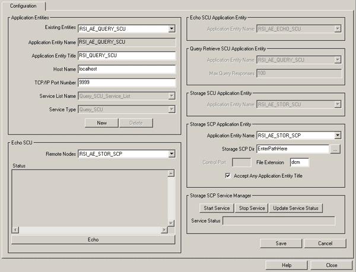
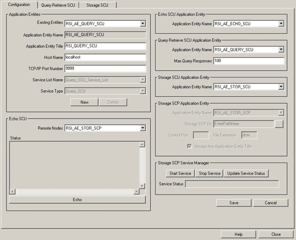
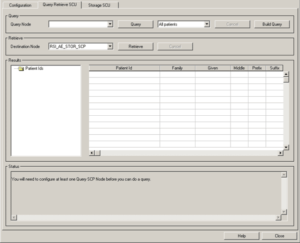
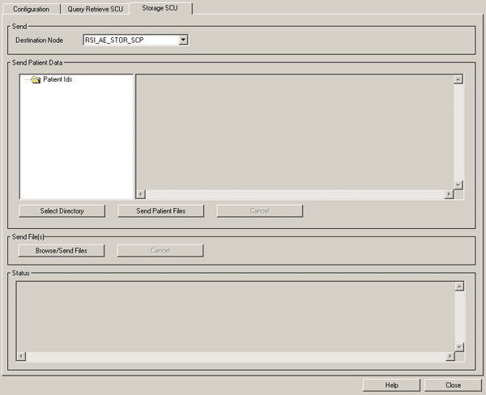

The user interface of the DICOM Network Services utility varies depending on whether it is started in system or local mode. See System Mode Interface and Local Mode Interface below for user interface details.
When you start the DICOM Network Services utility in system mode, you have access to the following Configuration tab:

When you start the DICOM Network Services utility in local mode, you have access to the following utility elements:
The Configuration tab is available in local and system modes, but the Storage SCP Application Entity area is not editable in local mode.
|
 |
The Query Retrieve SCU tab is available only in local mode.
|
 |
The Storage SCU tab is available only in local mode.
|
 |